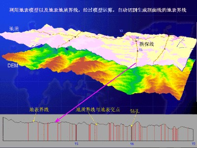

<!DOCTYPE html>
<html lang="en">
<head>
  <!-- Use correct character set. -->
  <meta charset="utf-8">
  <!-- Tell IE to use the latest, best version. -->
  <meta http-equiv="X-UA-Compatible" content="IE=edge">
  <!-- Make the application on mobile take up the full browser screen and disable user scaling. -->
  <meta name="viewport" content="width=device-width, initial-scale=1, maximum-scale=1, minimum-scale=1, user-scalable=no">
  <title>Hello World!</title>
  <script src="../web_lib/cesium/Build/Cesium/Cesium.js"></script>
  <style>
      @import url(../web_lib/cesium/Build/Cesium/Widgets/widgets.css);
      html, body, #cesiumContainer {
          width: 100%; height: 100%; margin: 0; padding: 0; overflow: hidden;
      }
  </style>
</head>
<body>
  <div id="cesiumContainer"></div>
  <script>
    var viewer = new Cesium.Viewer('cesiumContainer');
	
var citizensBankPark = viewer.entities.add({
  position : Cesium.Cartesian3.fromDegrees(116.8, 39.9060534),
  billboard : {
      image : '3.png',
      width : 64,
      height : 64
  },
  label : {
	text : '休息区',
    font : '14pt monospace',
    style: Cesium.LabelStyle.FILL_AND_OUTLINE,
    outlineWidth : 2,
    verticalOrigin : Cesium.VerticalOrigin.TOP,
    pixelOffset : new Cesium.Cartesian2(0, 32)
  }
});

citizensBankPark.description = '\
\
<p>\
  Wyoming is a state in the mountain region of the Western \
  United States.\
</p>\
<p>\
  Wyoming is the 10th most extensive, but the least populous \
  and the second least densely populated of the 50 United \
  States. The western two thirds of the state is covered mostly \
  with the mountain ranges and rangelands in the foothills of \
  the eastern Rocky Mountains, while the eastern third of the \
  state is high elevation prairie known as the High Plains. \
  Cheyenne is the capital and the most populous city in Wyoming, \
  with a population estimate of 62,448 in 2013.\
</p>\
<p>\
  Source: \
  <a style="color: WHITE"\
    target="_blank"\
    href="http://en.wikipedia.org/wiki/Wyoming">Wikpedia</a>\
</p>';


//viewer.zoomTo(viewer.entities);
var heading = Cesium.Math.toRadians(0); //是平面朝向，北面是0，东面是90
var pitch = Cesium.Math.toRadians(-30); //与地面夹角，0是在地面，-45是视线与地面夹角是45,-90则是垂直看向地面
viewer.zoomTo(citizensBankPark, new Cesium.HeadingPitchRange(heading, pitch));
	
  </script>
</body>
</html>